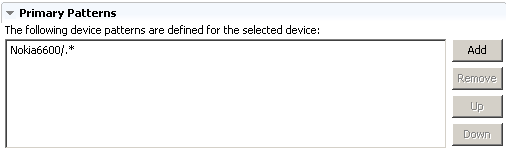
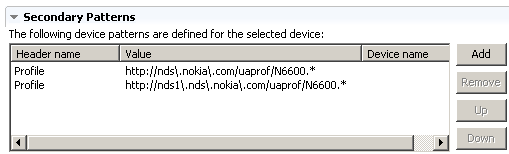

In the Device Repository editor Overview page you can edit one or more primary and secondary identification patterns for a device.
MCS uses the identification patterns at runtime to identify an unknown device. The patterns are regular expressions that are matched against the device headers. They can be split into two sets; those that match user agent headers and those that match general headers.
The device that MCS finds using the primary patterns may indicate that there is a more specific device to use. If the the headers of the request contain the secondary header specified in the device profile then MCS will carry out a search of the device patterns using a combination of the header and header value.

In the Secondary patterns section, you can specify the header or headers that will distinguish between devices that send the same primary pattern, but have differences in the HTTP header. For example, the User Agent Profile (UAProf) URI may be used.
A secondary pattern is made up of three parts; an HTTP header name, an HTTP header value and a device name, shown in three columns in the editor. You enter the secondary pattern information in the Header name and Value columns.
In the Device Name column you can specify the name of the device that matched the primary pattern. This is useful if more than one device that has the same secondary header, and you only want that device matched if a specific user agent was matched first.

Related information
Device Repository
editor